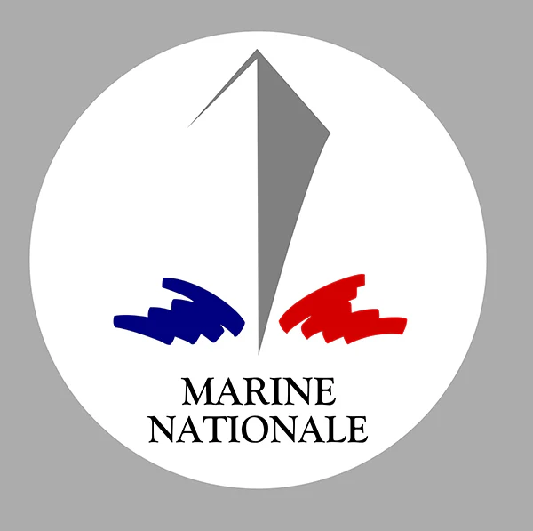

À propos de moi
Étudiant en BTS SIO option SISR, je me forme aux infrastructures réseau et systèmes avec une vraie appétence pour la sécurité et l’exploitation. J’aime concevoir des environnements propres, documentés et fiables.
Je progresse par la pratique : maquette de réseaux multi-sites (VLAN, routage, ACL), utilisation d’outils d’admin système, et mise à jour de bases de données en contexte réel lors de mon stage 2025.
⚓ Objectif professionnel

Mon ambition est d’allier passion pour la technologie et service à la nation en intégrant la Marine nationale comme technicien informatique / réseaux.